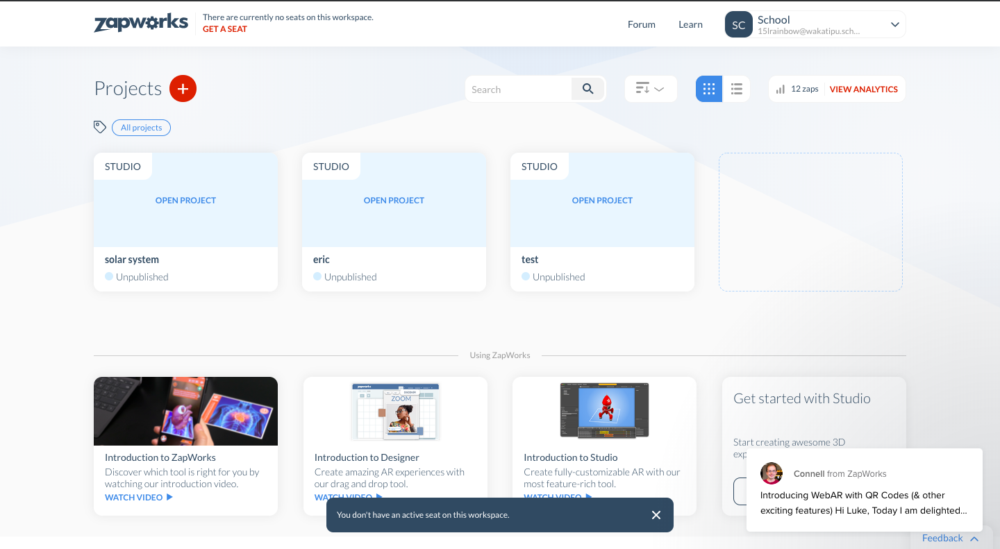
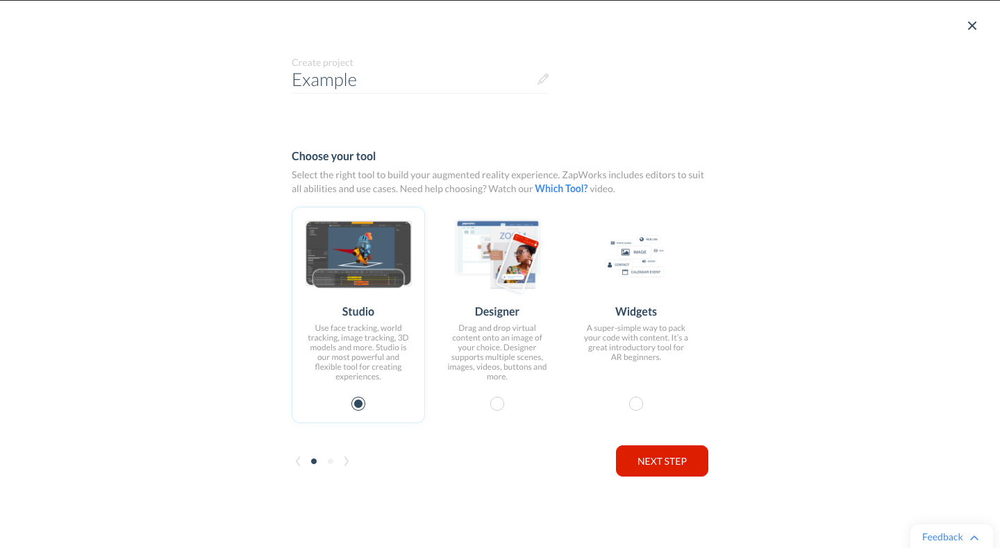
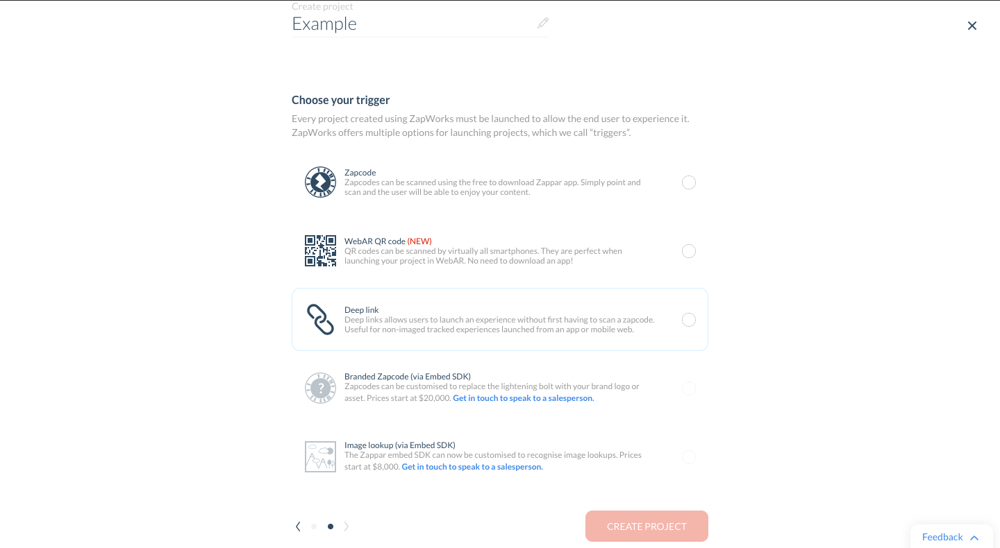
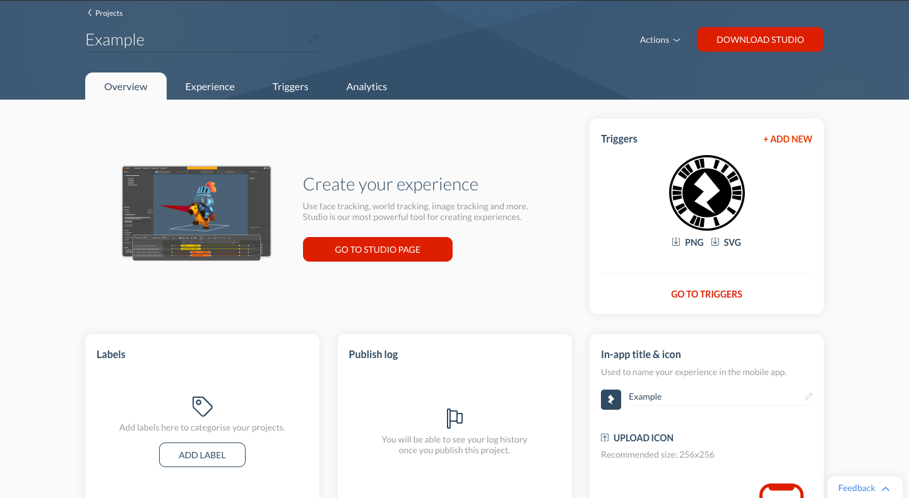

To create your own ZapWorks project is pretty simple, provided you have the studio downloaded.
Once you are on the dashboard of your studio account, simply click on the red "plus" to get started.
All of the projects you have made previously can be found here aswell.

Once you click on the plus you will be given 3 options. For the sake of this guide, I've chosen
studio, but your choice here will depend on what software you are using to create the AR experiences.
Once you have selected your tool, click on the 'Next Step' button.

On this next page, you will basically be chosing the trigger for you AR experience. The top option;
'ZapCode' is the trigger we will be using today, and this is the trigger you, and any others will be scanning to
view your AR experience. ZapWorks also provides other options like QR code scanning and Deep Links.
These options would be useful for viewing your AR experience without needing the ZapWorks app on your phone.

Once you have chosing your trigger, the work is pretty much done! The trigger you chose can be seen on the right.
On this page you can add labels, and view various other pieces of information about your creation. The rest of the
work is done in the ZapWorks Studio app. The app makes linking a creation to a trigger really easy, and after you've
made your experience all it takes is the push of a few buttons to finalise.

Once you have downloaded the ZapWorks app on your phone, the real magic happens. Seeing your experience in
as simple as finding the trigger from either the Studio app, or from your project dashboard on the web.
Once you have found it, simply scan the trigger and watch the magic happen. If your friends have also used
a ZapWorks trigger on their experiences you can use the phone app to unlock and view theirs aswell.
And there we go! You can now view and interact with your own, and other peoples Augmented Reality experiences.
The ZapWorks studio app provides you with many different templates for different AR experiences. It lets you build
experiences that allow face tracking, image tracking, and static 3D models.